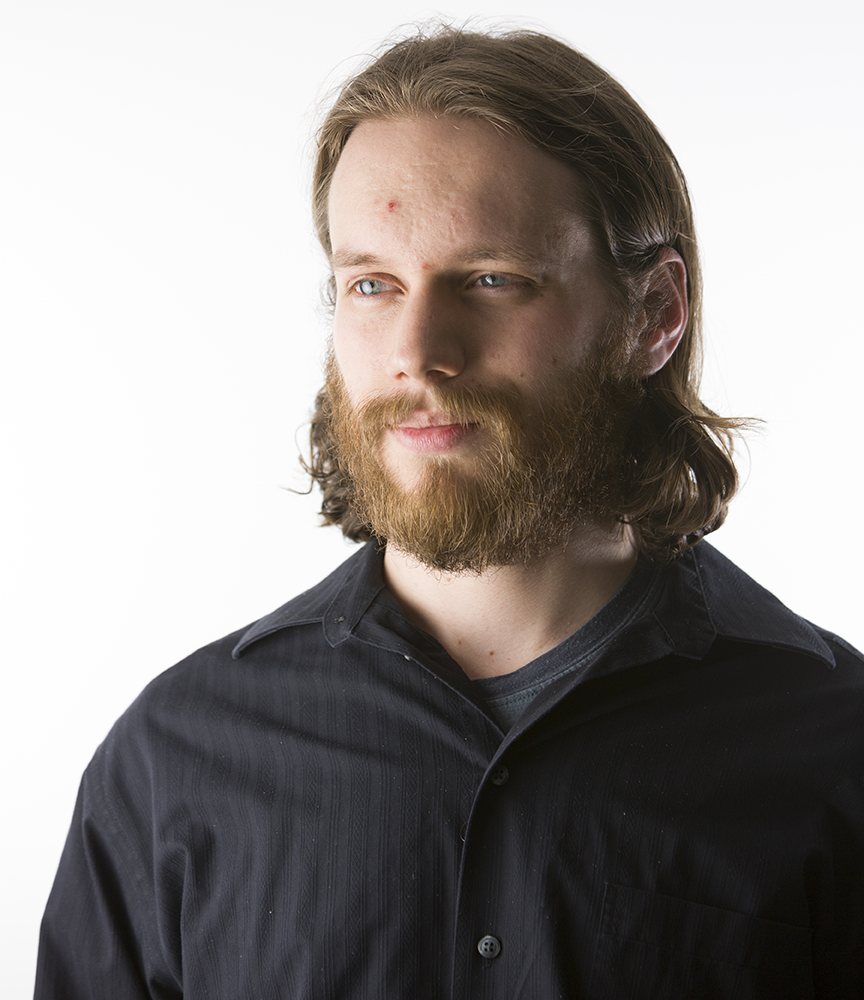

About Paul Bonion Designs
Paul Bonion Design is the freelance brand and mascot for me (Kevin Runyan), created in 2017, and plays off of childhood nicknames I received and the folk hero Paul Bunyan.
About Me
I am a hard working designer with a comprehensive knowledge of the tools of the trade, a desire to constantly learn new things, and the ability to move from interface to interface. My background in computer science gives me a deeper understanding of how computers work, which inform my web and mobile designs, as well an attention to detail that can only be forged through computer programming. I have ability to do my own troubleshooting, as well as the confidence to dig around in computers, having built my own computers before. My background in computer science and animation has given me the forethought to make sure I backup all my work, as well as making sure I give myself enough time to make sure the project is done within the time-frame.